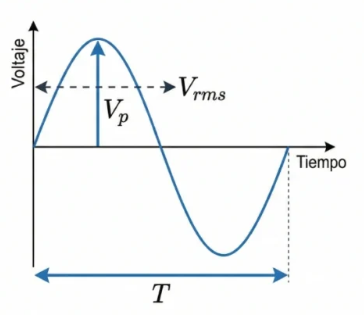
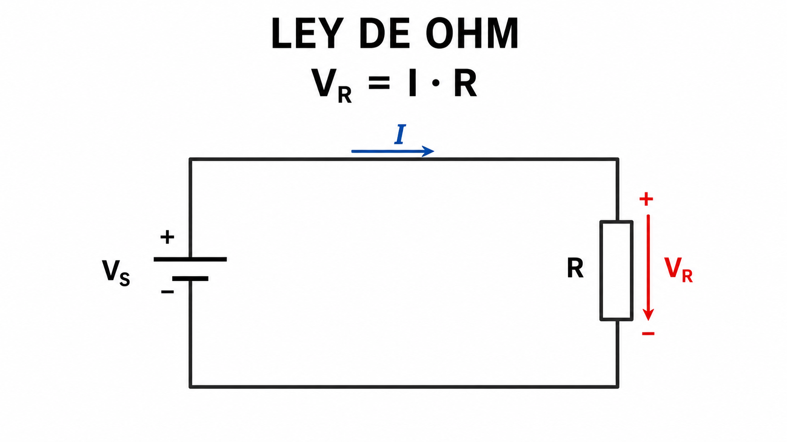
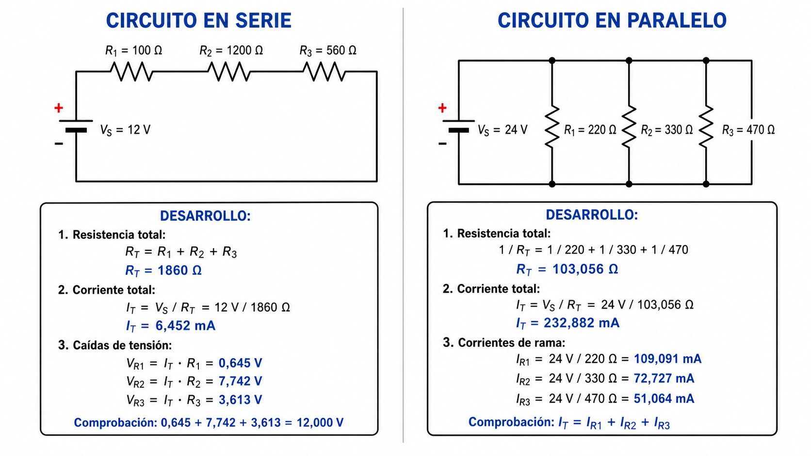
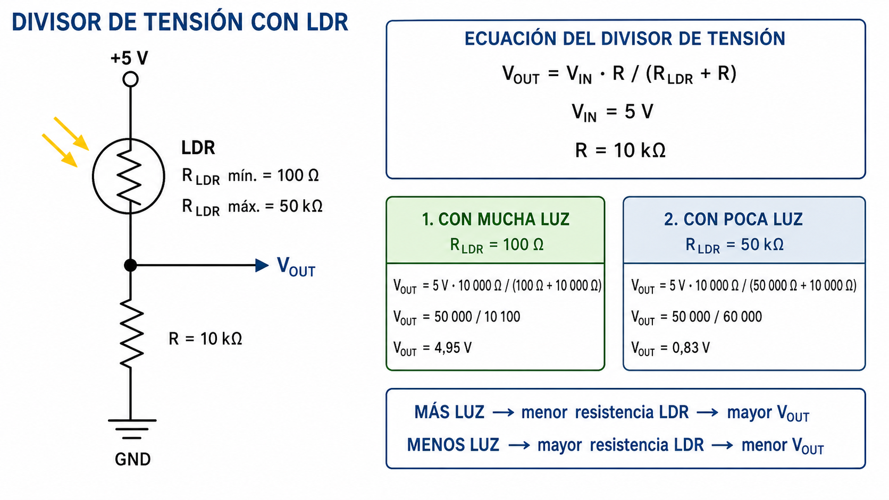
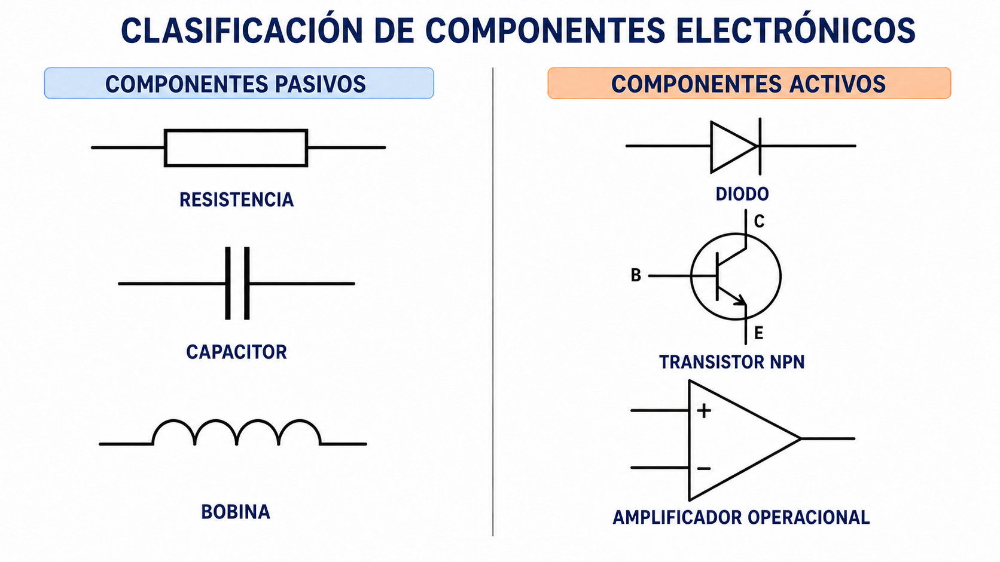
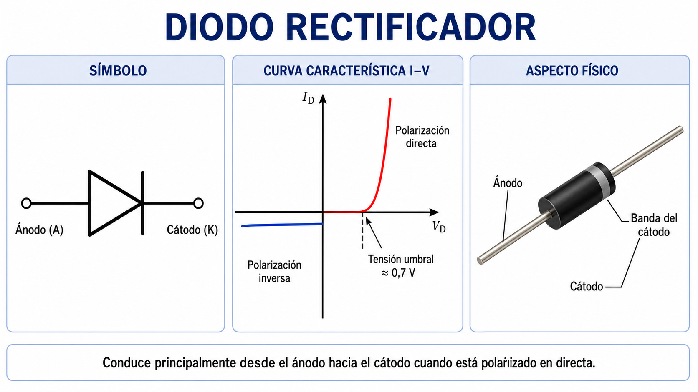
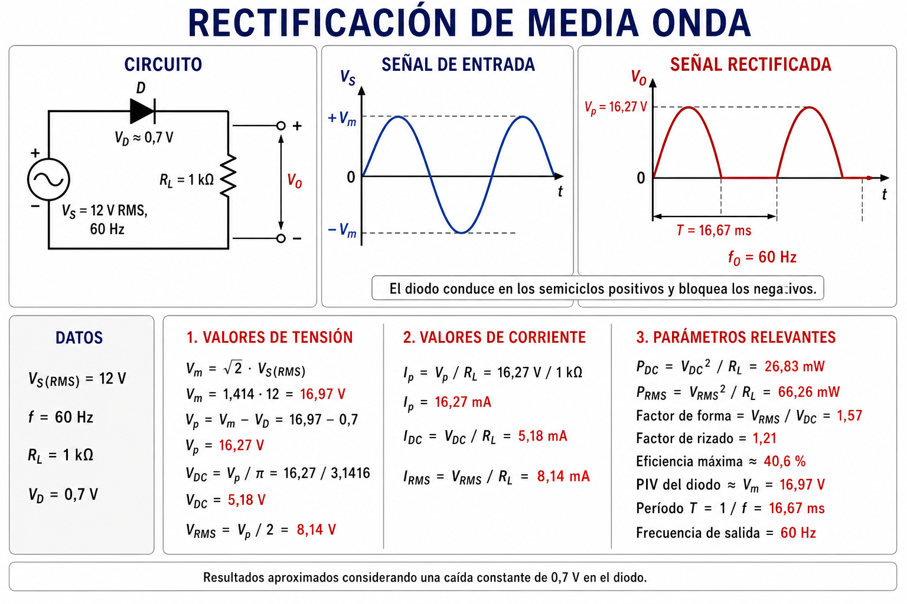
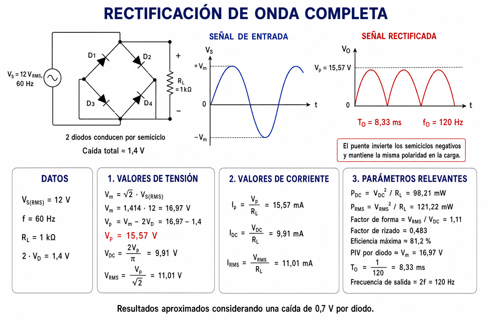
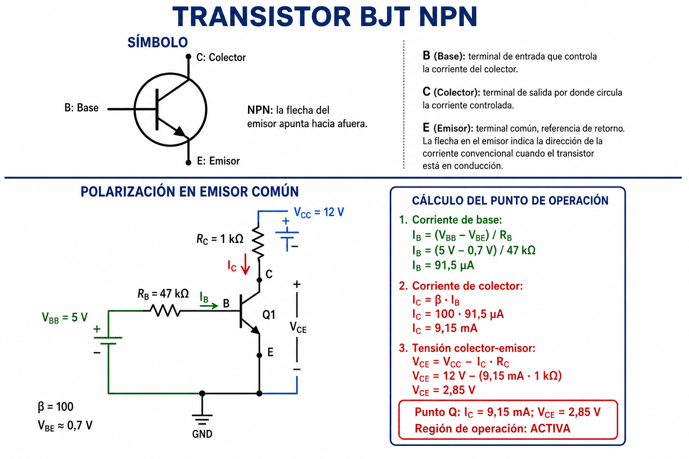
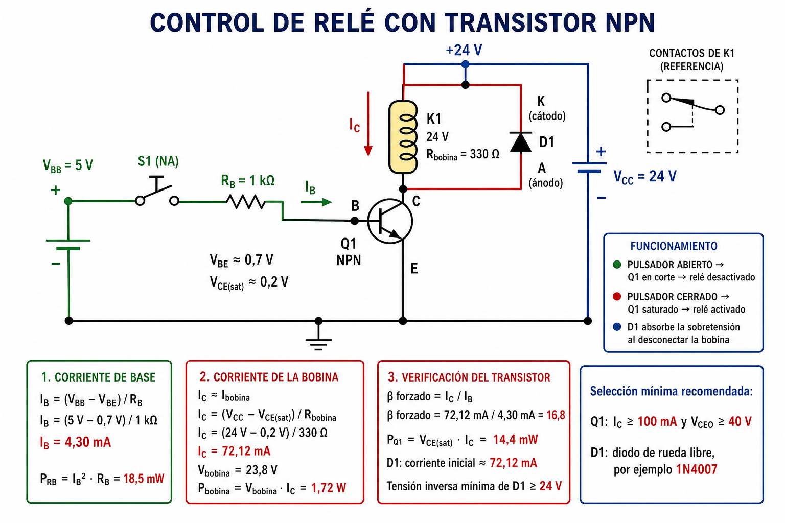

Principios de Electrónica y Electrónica Analógica
Bases de la electrónica aplicada, leyes fundamentales, componentes discretos, transistores como conmutación (Puente H), amplificadores operacionales y acondicionamiento de señales industriales.
El Reto de la Unidad:
¿Cómo seleccionar, conectar y diagnosticar circuitos electrónicos analógicos para que actúen como la interfaz confiable entre sensores y sistemas de control en la industria?
Objetivos de Aprendizaje Alineación curricular
Aprendizaje Esperado
Implementa circuitos electrónicos analógicos simples en placas de pruebas para verificar su funcionamiento, considerando criterios de seguridad y normativa técnica vigente.
Perfil de Egreso:
Esta unidad entrega las destrezas de mantenimiento de instrumentación analógica de nivel 3 MCTP (ChileValora).
Criterios de Evaluación
- 1.1.1 Asocia los conceptos de Electrónica y Electrónica Analógica con su especialidad, a partir de los requerimientos técnicos de un sistema de Automatización y Robótica.
- 1.1.2 Selecciona componentes electrónicos analógicos a partir de sus características de operación (datasheet).
- 1.1.3 Construye circuitos electrónicos analógicos en placas de pruebas (protoboard).
- 1.1.4 Comprueba el funcionamiento midiendo parámetros eléctricos en presencia y ausencia de energía eléctrica.
Conceptos Fundamentales Ramas de la electrónica
Electrónica Analógica
Procesa variables físicas representadas por señales eléctricas de variación continua en el tiempo. Trabaja con todo el rango de voltaje y corriente.
Electrónica Digital
Procesa información utilizando estados lógicos discretos (generalmente binarios: '0' y '1'). Los valores reales se agrupan en rangos de voltaje.
Electrónica de Potencia
Adapta y transforma la energía eléctrica mediante dispositivos semiconductores en conmutación para el control de cargas de alta potencia.
La interfaz del control:
En automatización, la mayoría de los fenómenos físicos son analógicos (presión, calor, caudal). La electrónica analógica acondiciona estas señales para que el cerebro digital (PLC/Controlador) pueda procesarlas de manera segura.
Señales Analógicas y sus Parámetros Caracterización de señales
Parámetros Fundamentales
- Valor Instantáneo: El voltaje v(t) en un instante específico de tiempo.
- Valor Peak (Pico, Vp): El valor máximo absoluto que alcanza la señal eléctrica.
- Valor RMS (Eficaz, Vrms): El valor equivalente en corriente continua que produce la misma disipación de calor en una resistencia.
(Para ondas senoidales puras)
- Valor Medio (Vmed): El promedio algebraico de todos los valores de la señal en un período (en CA pura es cero).

La Ley de Ohm Fundamentos eléctricos
Variables Eléctricas
- Voltaje / Tensión (V o U): Fuerza impulsora o diferencia de potencial que obliga a los electrones a moverse. Medido en Voltios (V).
- Corriente / Intensidad (I): Flujo o caudal de carga eléctrica por unidad de tiempo a través de un conductor. Medido en Amperios (A).
- Resistencia (R): Oposición natural que presenta un material al paso de la corriente eléctrica. Medida en Ohmios (Ω).
La Ecuación Fundamental
Postula que la intensidad de la corriente que circula por un circuito eléctrico es directamente proporcional a la tensión aplicada e inversamente proporcional a la resistencia del mismo.
Ley de Joule (Potencia Eléctrica)
Mide la energía disipada en forma de calor o consumida por unidad de tiempo en Vatios (W):

Circuitos Resistivos Serie y paralelo
Circuitos en Serie
Los componentes se conectan uno tras otro. La corriente es idéntica en todos ellos, y el voltaje de la fuente se divide.
Circuitos en Paralelo
Los componentes se conectan a los mismos terminales comunes. El voltaje es idéntico en todos ellos, y la corriente se bifurca.

Divisor de Tensión Concepto y funcionamiento
Concepto Fundamental
Un divisor de tensión es una configuración de circuito eléctrico que reparte la tensión de una fuente de alimentación entre una o más resistencias conectadas en serie.
Es de enorme importancia práctica en automatización e instrumentación para:
- Reducir niveles de tensión de una señal (por ejemplo, adaptar una señal de 24V a niveles de 5V para un microcontrolador).
- Medir variables físicas mediante sensores resistivos (como LDR, termistores NTC/PTC o potenciómetros).

Ejercicios de Pizarra Desarrollo y análisis matemático
Ejercicio 1: Divisor de Tensión Sensor
Un sensor resistivo de luz (LDR) se conecta en un circuito divisor de tensión con Vin = 10 V y una resistencia fija R1 = 10 kΩ. La resistencia del LDR (R2) varía entre:
- Luz Intensa: 1 kΩ
- Oscuridad Absoluta: 90 kΩ
Determine el rango de voltaje de salida (Vout) que recibirá el controlador analógico.
Ejercicio 2: Polarización y Protección LED
Se desea conectar un diodo indicador LED a una salida digital de un PLC de 24 VDC. El LED requiere una corriente de operación segura de 15 mA y presenta una caída de tensión directa de VF = 2.0 V.
- Calcule el valor de la resistencia de limitación de corriente (Rs) requerida en serie.
- Determine la potencia disipada por la resistencia y seleccione su potencia nominal comercial.
Clasificación de Componentes Electrónicos Pasivos y Activos
Componentes Pasivos
No tienen la capacidad de controlar la corriente eléctrica por medio de otra señal eléctrica. Almacenan o disipan energía en campos eléctricos, magnéticos o por calor.
| Componente | Unidad | Uso en Automatización |
|---|---|---|
| Resistor | Ohm (Ω) | Divisor de tensión, limitación de corriente. |
| Condensador | Faradio (F) | Filtro de ruido en fuentes, acoplamiento. |
| Inductor | Henrio (H) | Filtros electromagnéticos, bobinas. |
Componentes Activos
Pueden controlar el flujo de corriente mediante otra señal eléctrica o amplificar señales. Constituyen el núcleo lógico y dinámico de los circuitos analógicos.
| Componente | Tipo | Uso en Automatización |
|---|---|---|
| Diodo | Semiconductor | Rectificación, protección de polaridad. |
| Transistor | Semiconductor | Conmutación de cargas (relés), drivers. |
| Op-Amp | Circuito Integrado | Acondicionamiento de sensores, filtros activos. |

El Diodo Semiconductor Estructura y hojas de datos
Funcionamiento y Polarización
- Unión PN: Dispositivo unidireccional formado por la unión de silicio tipo P (ánodo) y tipo N (cátodo).
- Polarización Directa (Vánodo > Vcátodo): Conduce corriente una vez superada la tensión umbral (típicamente 0.7 V para silicio, 0.3 V para germanio y schottky).
- Polarización Inversa (Vánodo < Vcátodo): No conduce. Se comporta como un circuito abierto (excepto por una pequeña corriente de fuga en el orden de microamperios).
Parámetros Críticos de Datasheet (Ej. 1N4007):
- VRRM (Voltaje Reverso Máximo de Pico): Voltaje inverso máximo antes de la ruptura térmica (1000 V en el 1N4007).
- IO o IF(AV) (Corriente Directa Promedio): Corriente máxima continua que puede conducir (1 A).
- VF (Caída de Tensión Directa): Caída de tensión en conducción (máx 1.1 V a 1 A).

Aplicación del Diodo: Rectificación de Media Onda Conversión CA a CC
Rectificador de Media Onda
Elimina el semiciclo negativo de una señal de corriente alterna. Presenta una eficiencia baja y requiere un filtrado de gran capacidad para obtener una corriente continua estable.
Fórmula de salida promedio:

Aplicación del Diodo: Rectificación de Onda Completa Conversión CA a CC
Rectificador de Onda Completa (Puente)
Utiliza 4 diodos (Puente de Graetz) para aprovechar ambos semiciclos. Aumenta al doble la frecuencia del rizado, facilitando el filtrado posterior y mejorando significativamente la eficiencia.
Fórmula de salida promedio:

Transistor: Conmutación y Control Simbología del BJT y MOSFET
Características Lógicas
Transistor Bipolar (BJT): Controlado por corriente en su Base (IB). Tiene bajas caídas de voltaje de saturación (VCE(sat) ≈ 0.2 V), lo que es ideal para aplicaciones de conmutación de baja potencia.
Transistor de Efecto de Campo (MOSFET): Controlado por voltaje en su Compuerta (Gate, VGS). Es el estándar para conmutación de potencia media/alta debido a su alta velocidad y baja resistencia en conducción (RDS(on)).
Zonas de Trabajo Lógico:
- **Corte:** Circuito abierto (IC = 0 o ID = 0).
- **Saturación / Conducción Completa:** Interruptor cerrado con conducción máxima.

El Transistor como Conmutador Driver de relé y diodo volante
El Desafío de las Cargas Inductivas
Al desactivar el transistor, la bobina del relé se opone bruscamente al corte de corriente generando un transitorio inductivo de muy alto voltaje en sentido inverso:
Este pico de tensión reverso superará con creces la tensión de ruptura del transistor, destruyéndolo por sobreesfuerzo.
Diodo Volante de Protección:
Se conecta en paralelo inverso a la carga. Cuando el transistor corta, el diodo se polariza en directo, ofreciendo un camino seguro de baja resistencia para descargar y disipar la energía magnética almacenada en la bobina.

Control de Potencia con PWM Modulación de tensión promedio
¿Qué es PWM?
Modulación por Ancho de Pulso (Pulse Width Modulation). Consiste en variar el tiempo de encendido respecto al período total para modificar el valor de la tensión promedio suministrada a una carga.
Donde D es el Duty Cycle (Ciclo de trabajo), expresado de 0% a 100%.
Ciclo de Trabajo y Tensión Promedio
| Duty Cycle (D) | Estado de Conmutación | Voltaje Promedio (Vprom) |
|---|---|---|
| 25% | Activo 1/4 del tiempo | 0.25 • Vmax |
| 50% | Activo la mitad del tiempo | 0.50 • Vmax |
| 90% | Casi totalmente activo | 0.90 • Vmax |
Aplicación típica:
Control de velocidad en motores de corriente continua (DC) y control de intensidad lumínica (Dimming).
Inversión de Giro: El Puente H Control bidireccional
Configuración de 4 Cuadrantes
Permite alternar la polaridad de un motor DC utilizando 4 transistores (Q1, Q2, Q3, Q4) que actúan como interruptores lógicos.
| Q1 | Q2 | Q3 | Q4 | Comportamiento del Motor |
|---|---|---|---|---|
| ON | OFF | OFF | ON | Giro Directo (A) |
| OFF | ON | ON | OFF | Giro Inverso (B) |
| OFF | OFF | OFF | OFF | Inercia / Parada libre |
¡Advertencia Shoot-Through!
Si Q1 y Q2 (o Q3 y Q4) se encienden al mismo tiempo, se produce un cortocircuito directo entre la fuente y tierra, destruyendo los transistores.
El Amplificador Operacional Símbolo y reglas básicas
¿Qué es un Op-Amp?
Es un amplificador diferencial de acoplamiento directo, de muy alta ganancia, alta impedancia de entrada y baja impedancia de salida.
Las Reglas de Oro para Análisis Ideal:
1. **Tensión Diferencial Cero:** En lazo cerrado con realimentación negativa, la diferencia de voltaje entre las entradas es cero (V+ = V-).
2. **Corriente de Entrada Cero:** Debido a la impedancia de entrada infinita, no circula corriente hacia los terminales de entrada (I+ = 0, I- = 0).
Comparador vs Schmitt Trigger Acondicionamiento de señales con ruido
El Problema del Ruido
Un comparador simple con un único umbral cambia su salida repetidamente ante transiciones lentas o ruidosas. En automatización, esto genera falsos conteos o activación destructiva de actuadores (chattering).
Schmitt Trigger (Histéresis):
Establece **dos umbrales distintos**: uno superior (VTH) para activar y uno inferior (VTL) para desactivar. El ruido dentro del rango de histéresis es completamente ignorado, garantizando una salida digital estable y limpia.
Configuraciones del Amplificador Operacional Inversor y No Inversor
Amplificador Inversor
La tensión de entrada se aplica en la entrada inversora. La salida tiene signo opuesto y ganancia definida por el cociente de las resistencias:
Amplificador No Inversor
La tensión de entrada se aplica directamente a la entrada no inversora. La salida conserva la fase y su ganancia siempre es mayor o igual a 1:
Amplificador de Instrumentación Señales industriales débiles
Acondicionamiento de Alta Precisión
Diseño basado en 3 Amplificadores Operacionales que resuelve las limitaciones de los amplificadores diferenciales comunes.
- Alta Impedancia de Entrada: Los buffers de entrada evitan cargar eléctricamente los sensores débiles.
- Rechazo en Modo Común (CMRR): Cancela el ruido que afecta a ambos cables de señal de campo al mismo tiempo (ej: inducción magnética por motores cercanos).
Aplicación por excelencia:
Acondicionamiento de sensores tipo puente Wheatstone (Celdas de carga para pesaje industrial, sensores de presión extensométricos).
Armado y Diagnóstico Seguro Normas de laboratorio
Buenas Prácticas en Protoboard
- Distribución de Energía: Define barras de alimentación fijas para positivo (Rojo) y común/tierra (Azul/Negro).
- Componentes Ordenados: Corta las terminales sobrantes para evitar falsos contactos y cortocircuitos por cruce de cables.
- Desconexión para Cambios: Modifica las conexiones del circuito **únicamente** con la fuente de poder apagada.
Pasos para Diagnóstico de Fallas
- Inspección Visual: Verificar que las polaridades de diodos y condensadores electrolíticos sean correctas, y buscar sobrecalentamiento.
- Verificación de Fuente: Medir el voltaje de alimentación directo en los terminales de los circuitos integrados (Op-Amps).
- Seguimiento de Señal: Inyectar estímulo conocido a la entrada y contrastar teóricamente con la salida usando osciloscopio o multímetro.
Actividad Práctica 1 Driver de motor con Puente H
Guía de Ejecución
Descripción: Montar sobre protoboard un circuito Puente H con transistores bipolares para controlar la dirección de rotación de un motor de 12 VDC.
- Componentes: 2 transistores NPN, 2 transistores PNP, 4 diodos 1N4007, resistencias de base y un motor DC.
- Pasos Clave:
1. Cablear la fuente de poder común para lógica y motor.
2. Colocar los transistores y las resistencias de protección de base.
3. Conectar los diodos volantes en paralelo inverso a cada transistor.
4. Comprobar los voltajes en el motor para cada combinación lógica de control.
Evidencias Requeridas
- Esquema eléctrico completo del circuito armado con el número de parte de los transistores.
- Tabla de verdad medida empíricamente (voltajes de salida en el motor).
- Mediciones del consumo de corriente de base y colector.
Actividad Práctica 2 Acondicionador Voltaje a Corriente (4-20mA)
Acondicionamiento Industrial
Objetivo: Diseñar y construir un circuito acondicionador de señales utilizando amplificadores operacionales que convierta un rango de voltaje de entrada (0-5V) a una salida de lazo de corriente industrial (4-20mA).
¿Por qué corriente?
La corriente no es afectada por caídas de tensión en cables largos y permite diagnosticar cables rotos (0 mA es falla, 4 mA es lectura cero).
Tareas de Medición y Ajuste
- Configurar el Op-Amp como fuente de corriente controlada por tensión (Convertidor V-I).
- Verificar linealidad del lazo colocando resistencias de carga variables en la salida (simulando distancia de cableado).
- Registrar precisión y error en porcentaje.
Rúbrica de Evaluación Sumativa Evaluación de desempeño
| Criterio de Evaluación | Logro Esperado (Puntaje Máximo) | Ponderación |
|---|---|---|
| Identificación y Selección | Selecciona componentes adecuados y explica sus características técnicas usando datasheet. | 25% |
| Montaje de Circuitos | Monta el circuito de forma ordenada y segura en protoboard de acuerdo al diagrama esquemático. | 35% |
| Diagnóstico y Reparación | Utiliza multímetro y osciloscopio para verificar parámetros y localizar fallas inducidas. | 30% |
| Seguridad y Documentación | Cumple normas de seguridad de laboratorio y documenta la experiencia con rigurosidad técnica. | 10% |
Cierre de Unidad Autoevaluación final
Preguntas de Repaso
- ¿Por qué no podemos prescindir de un diodo volante en un circuito con carga inductiva (bobina)?
- ¿Qué diferencia conceptual hay entre el valor pico y el valor RMS de una señal senoidal?
- ¿Qué peligro eléctrico existe al alternar comandos en un Puente H y cómo se previene?
- ¿En qué escenario industrial es obligatorio usar un Schmitt Trigger en lugar de un comparador simple?
Conclusiones Clave
- Los componentes semiconductores (diodos, transistores, amplificadores operacionales) estructuran las etapas físicas de control analógico.
- El acondicionamiento físico de señales previene problemas de lectura lógica digital en el PLC.
- El diagnóstico estructurado ahorra tiempo de parada de planta y evita el reemplazo innecesario de componentes costosos.